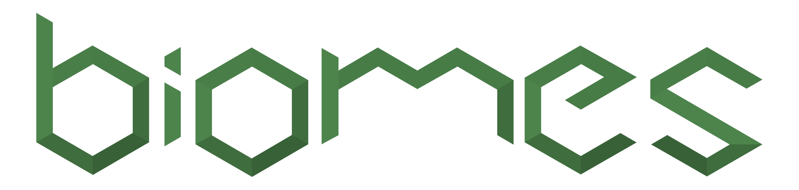
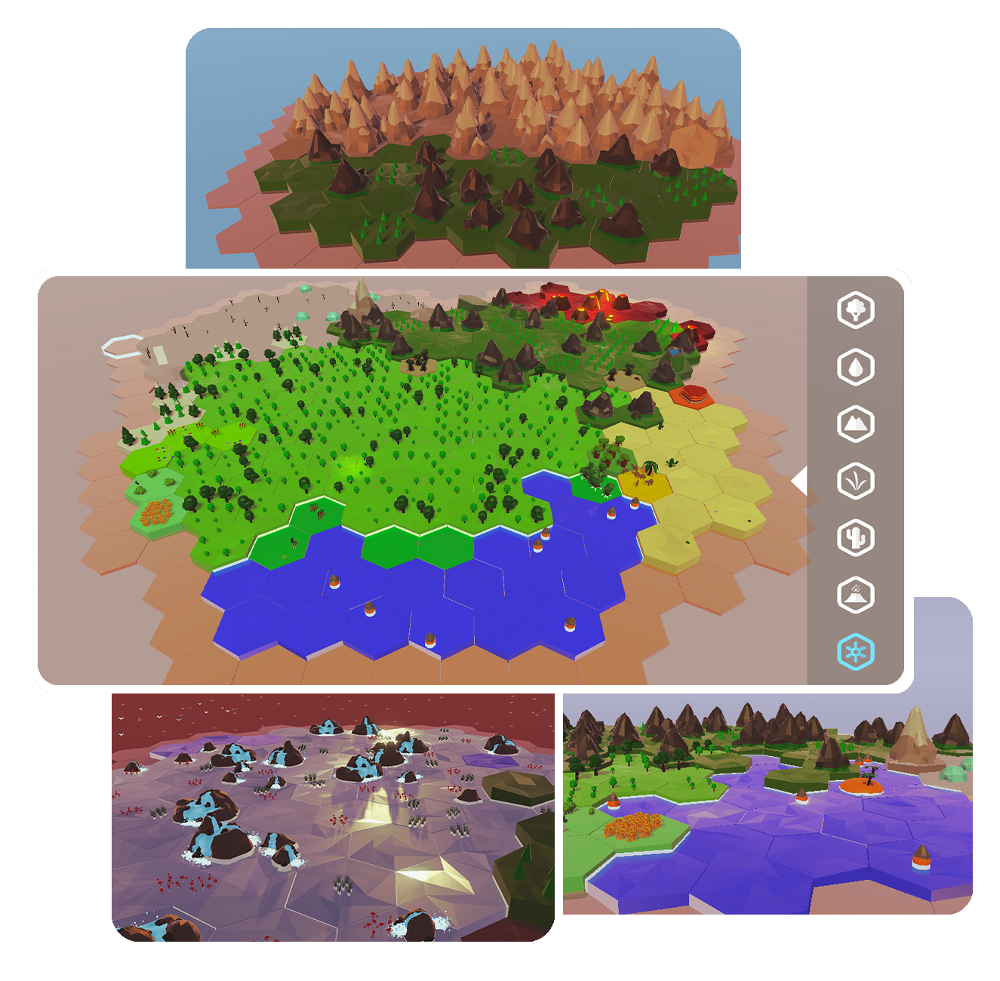

Biome est un jouet de construction de monde à partir
d'environnement.
Dans une ambiance calme et reposante, placez des environnements comme des forêt ou des mers et regardez votre monde évolué et créé de nouveaux environnements ! Testez le jeu ici : https://observatoire.itch.io/biomes Ce projet à été conçu dans le cadre de notre projet semestriel de 2ème année .
Durant 4 mois, nous avons oeuvré avec mes camarades à concevoir un projet dont nous serons fier de présenter.
J'ai pris le rôle, dans ce projet, de Game Designer en concevant le Core Game de ce jouet ainsi que les mécaniques avec l'aide de tous les autres membres du projet.
J'ai aussi travaillé sur les modèles 3D du jouet ou encore la programmation du prototype.
Nous avons utilisés Unity comme moteur de jeu, GitHub pour partager le projet, FMOD pour l'intégration sonore ou encore Blender pour les assets 3D ou Illustrator pour les éléments d'UI
Dans une ambiance calme et reposante, placez des environnements comme des forêt ou des mers et regardez votre monde évolué et créé de nouveaux environnements ! Testez le jeu ici : https://observatoire.itch.io/biomes Ce projet à été conçu dans le cadre de notre projet semestriel de 2ème année .
Durant 4 mois, nous avons oeuvré avec mes camarades à concevoir un projet dont nous serons fier de présenter.
J'ai pris le rôle, dans ce projet, de Game Designer en concevant le Core Game de ce jouet ainsi que les mécaniques avec l'aide de tous les autres membres du projet.
J'ai aussi travaillé sur les modèles 3D du jouet ou encore la programmation du prototype.
Nous avons utilisés Unity comme moteur de jeu, GitHub pour partager le projet, FMOD pour l'intégration sonore ou encore Blender pour les assets 3D ou Illustrator pour les éléments d'UI
Nos intensions pour ce projet était d'avoir un
système "vivant"
: le système évoluera sans l'intervention du joueur et de
manière organique.
Sur ce système, nous avons mis des mécaniques de construction qui donne aux joueurs des outils pour lutter contre le système.
Enfin, nous voulions une ambiance calme et légère , apporté par la DA low poly avec des aplats de couleur, le travail du son et de la musique ainsi que le travail sur la représentation des environnements et de leur identité. Trailer du jeu : trailer-du-jeu/yt.fr Testez le jeu ici : https://observatoire.itch.io/biomes
Sur ce système, nous avons mis des mécaniques de construction qui donne aux joueurs des outils pour lutter contre le système.
Enfin, nous voulions une ambiance calme et légère , apporté par la DA low poly avec des aplats de couleur, le travail du son et de la musique ainsi que le travail sur la représentation des environnements et de leur identité. Trailer du jeu : trailer-du-jeu/yt.fr Testez le jeu ici : https://observatoire.itch.io/biomes
